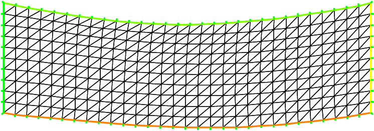

Non-linear elasticity¶
The nonlinear elasticity problem is: find the displacement \((u_{1},u_{2})\) minimizing \(J\)
where \(F2(u_{1},u_{2}) = A(E[u_{1},u_{2}],E[u_{1},u_{2}])\) and \(A(X,Y)\) is bilinear symmetric positive form with respect two matrix \(X,Y\).
where \(f\) is a given \(\mathcal{C}^2\) function, and \(E[u_{1},u_{2}] = (E_{ij})_{i=1,2,\,j=1,2}\) is the Green-Saint Venant deformation tensor defined with:
Denote \(\mathbf{u}=(u_{1},u_{2})\), \(\mathbf{v}=(v_{1},v_{2})\), \(\mathbf{w}=(w_{1},w_{2})\). So, the differential of \(J\) is
where \(DF2(\mathbf{u})(\mathbf{v}) = 2 \; A(DE[\mathbf{u}](\mathbf{v}),E[\mathbf{u}])\) and \(DE\) is the first differential of \(E\).
The second order differential is
- :raw-latex:`begin{eqnarray*}
- D^2 J(mathbf{u})((mathbf{v}),(mathbf{w})) &=& displaystyleint DF2(mathbf{u})(mathbf{v}) ; DF2(mathbf{u})(mathbf{w}) ; f’‘(F2(mathbf{u}))) \ &+& displaystyleint ; D^2F2(mathbf{u})(mathbf{v},mathbf{w}) ; f’(F2(mathbf{u})))
end{eqnarray*}`
where
and \(D^{2}E\) is the second differential of \(E\).
So all notations can be define with
`:::freefem macro </reference/Types/#macro-design>`__:
The Newton Method is
choose $ n=0$,and \(u_0,v_0\) the initial displacement
loop:
find \((du,dv)\) : solution of
\[D^2J(u_n,v_n)((w,s),(du,dv)) = DJ(u_n,v_n)(w,s) , \quad \forall w,s\]\(un = un - du,\quad vn =vn - dv\)
until \((du,dv)\) small is enough
The way to implement this algorithm in FreeFem++ is use a macro tool to implement \(A\) and \(F2\), \(f\), \(f'\),\(f''\).
A macro is like in :::cpp ccp preprocessor of C++, but this begin by
:::freefem macro and the end of the macro definition is before the
comment :::freefem //. In this case the macro is very useful because
the type of parameter can be change. And it is easy to make automatic
differentiation.
Fig. 36: The deformed domain
